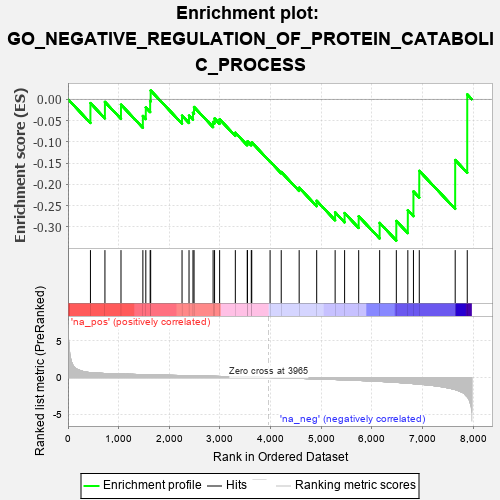
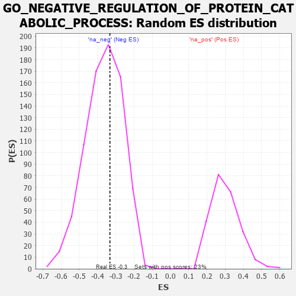

| | | Dataset | 7d |
| Phenotype | NoPhenotypeAvailable |
| Upregulated in class | na_neg |
| GeneSet | GO_NEGATIVE_REGULATION_OF_PROTEIN_CATABOLIC_PROCESS |
| Enrichment Score (ES) | -0.3321105 |
| Normalized Enrichment Score (NES) | -0.9107407 |
| Nominal p-value | 0.5929779 |
| FDR q-value | 0.942349 |
| FWER p-Value | 1.0 |
Table: GSEA Results Summary

Fig 1: Enrichment plot: GO_NEGATIVE_REGULATION_OF_PROTEIN_CATABOLIC_PROCESS
Profile of the Running ES Score & Positions of GeneSet Members on the Rank Ordered List
| PROBE | GENE SYMBOL | GENE_TITLE | RANK IN GENE LIST | RANK METRIC SCORE | RUNNING ES | CORE ENRICHMENT | | 1 | SUFU | | | 443 | 0.665 | -0.0091 | No |
| 2 | SF3B3 | | | 729 | 0.552 | -0.0063 | No |
| 3 | TAF9 | | | 1046 | 0.475 | -0.0128 | No |
| 4 | TIMP2 | | | 1478 | 0.394 | -0.0394 | No |
| 5 | SCO1 | | | 1536 | 0.385 | -0.0195 | No |
| 6 | N4BP1 | | | 1622 | 0.370 | -0.0042 | No |
| 7 | DERL2 | | | 1632 | 0.368 | 0.0205 | No |
| 8 | PSMF1 | | | 2251 | 0.268 | -0.0385 | No |
| 9 | HIPK2 | | | 2389 | 0.247 | -0.0385 | No |
| 10 | UBXN1 | | | 2467 | 0.232 | -0.0319 | No |
| 11 | UBAC2 | | | 2488 | 0.229 | -0.0183 | No |
| 12 | UCHL5 | | | 2864 | 0.172 | -0.0535 | No |
| 13 | MTM1 | | | 2893 | 0.168 | -0.0453 | No |
| 14 | AZIN2 | | | 2993 | 0.150 | -0.0472 | No |
| 15 | SMAD3 | | | 3303 | 0.105 | -0.0787 | No |
| 16 | NELL1 | | | 3538 | 0.070 | -0.1033 | No |
| 17 | PIN1 | | | 3543 | 0.069 | -0.0990 | No |
| 18 | WAC | | | 3618 | 0.056 | -0.1043 | No |
| 19 | RIC1 | | | 3627 | 0.055 | -0.1015 | No |
| 20 | VPS35 | | | 3989 | -0.006 | -0.1465 | No |
| 21 | TIMP1 | | | 4209 | -0.043 | -0.1711 | No |
| 22 | BAG6 | | | 4563 | -0.108 | -0.2079 | No |
| 23 | TLK2 | | | 4909 | -0.179 | -0.2388 | No |
| 24 | EPHA4 | | | 5273 | -0.265 | -0.2659 | No |
| 25 | LRIG2 | | | 5460 | -0.310 | -0.2676 | No |
| 26 | PDCL3 | | | 5738 | -0.388 | -0.2753 | No |
| 27 | ROCK1 | | | 6152 | -0.520 | -0.2908 | Yes |
| 28 | DYSF | | | 6481 | -0.654 | -0.2862 | Yes |
| 29 | EGFR | | | 6708 | -0.765 | -0.2610 | Yes |
| 30 | GIPC1 | | | 6819 | -0.826 | -0.2168 | Yes |
| 31 | SNX3 | | | 6934 | -0.893 | -0.1685 | Yes |
| 32 | TAF1 | | | 7643 | -1.633 | -0.1429 | Yes |
| 33 | FYN | | | 7881 | -2.622 | 0.0113 | Yes |
Table: GSEA details [plain text format]

Fig 2: GO_NEGATIVE_REGULATION_OF_PROTEIN_CATABOLIC_PROCESS: Random ES distribution
Gene set null distribution of ES for GO_NEGATIVE_REGULATION_OF_PROTEIN_CATABOLIC_PROCESS